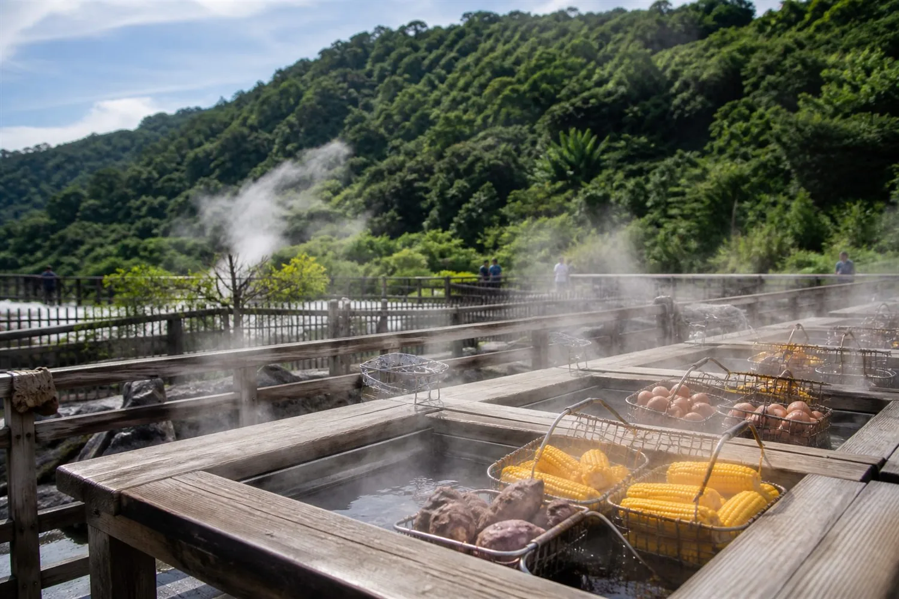
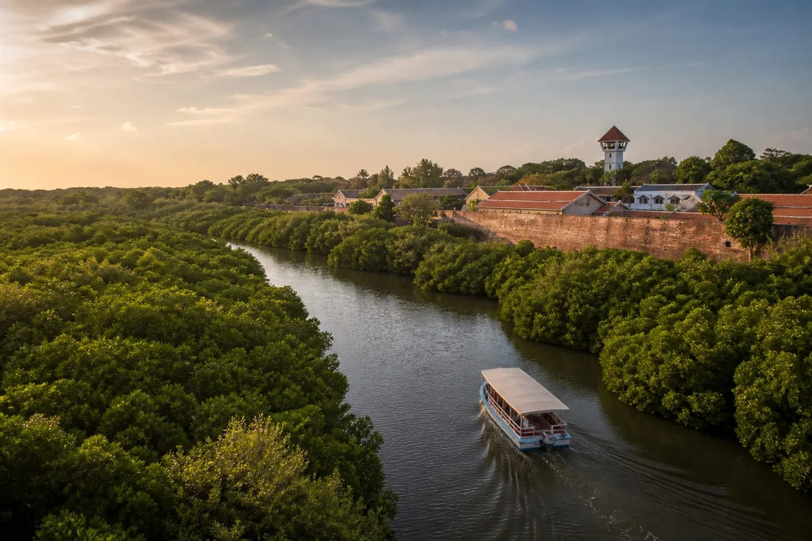
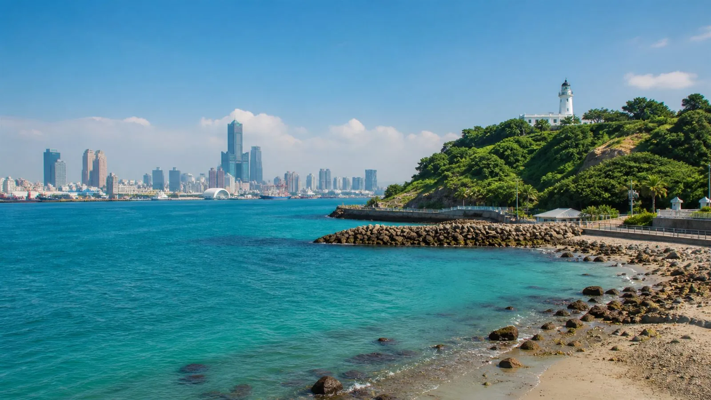
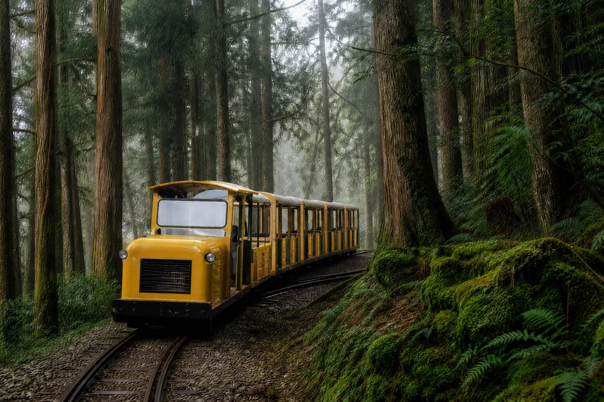
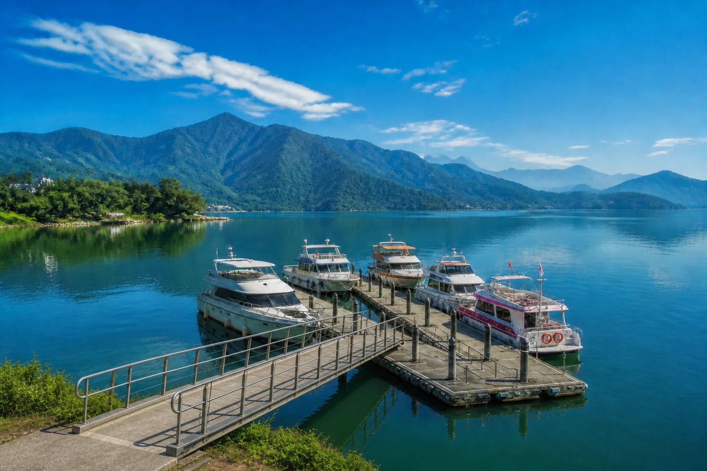
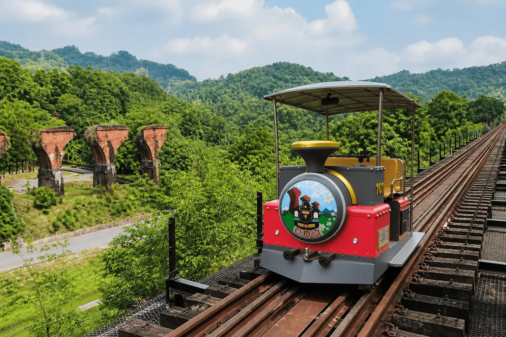
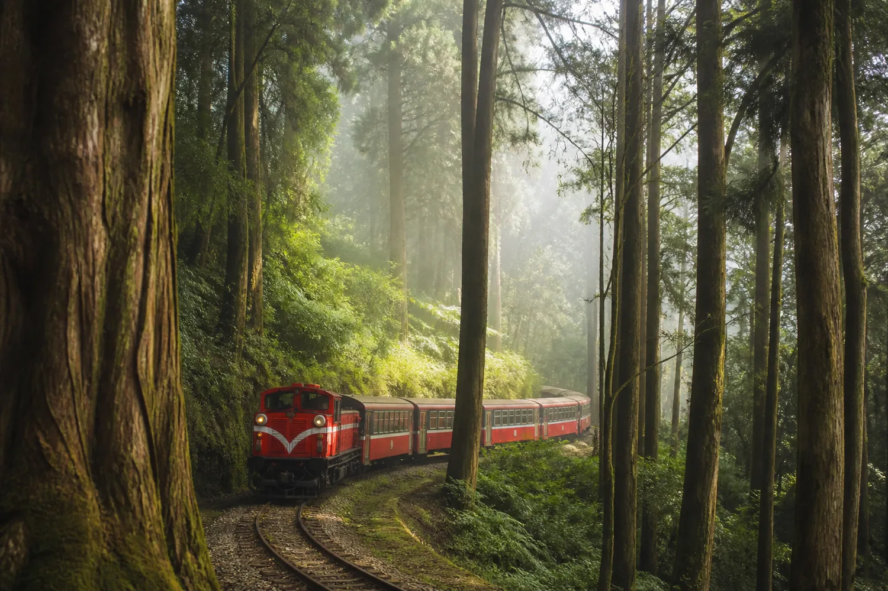

精選包車行程行程您來決定，細節我們安排
精選行程
以下是適合包車旅遊的路線靈感。實際停留時間、順序與用餐安排，將依天候、交通、季節與旅客步調彈性調整。
手機可直接分享給親友
北部精選山城、海岸與火山地景
宜蘭精選農趣、溫泉與高山森林
中部精選湖泊、高山、鐵道、古鎮與客製行程
南部精選府城文化、港灣與客庄風景








找不到符合條件的行程，請試試其他關鍵字或篩選方式。
車輛與服務說明
依人數、行李、兒童座椅與路線需求，協助確認適合的車型與服務方式。
適合小型同行旅客與輕量行李。實際乘坐與行李空間將依車款確認。
適合家庭或多人同行；如有大型行李、推車或安全座椅，請在詢價時一併說明。
適合較多人數、團體與多件行李的旅程，可依行程需求確認安排。
🚘
一日・多日包車
從城市一日慢遊到跨縣市多日旅行，保留彈性，依旅客步調安排。
✈️
機場與定點接送
可協助規劃接機、送機、飯店往返與多點接送等交通需求。
👨👩👧
親子與特殊需求
兒童座椅、輪椅、寵物或大型行李等需求，請於預約時主動告知。
🧭
在地行程建議
依季節、天候、交通與景點特性，協助調整停留順序與旅遊節奏。
🧼
安心乘車
出發前確認集合、行李與特殊需求；乘車期間也請共同維護車內整潔。
💬
出發前確認
行程、車型、費用範圍與服務內容，均以正式確認內容為準。
費用與行程提醒
- 正式報價會依日期、車型、用車時數、路線與特殊需求確認。
- 餐食、景點門票、體驗活動、住宿或代訂項目，除非報價明確列入，通常另行計算。
- 多日行程如涉及司機住宿、餐費或跨區安排，會於確認前一併說明。
- 若遇天候、交通管制或不可預期狀況，將以安全與行程順暢為優先調整。
行李與乘車條件
- 請於詢價時告知人數、行李件數與最大尺寸，才能正確安排車型。
- 嬰幼兒安全座椅、輪椅、寵物或特殊設備，請提前備註確認。
- 小型車的司機以駕駛與車上簡介為主；若需全程隨行導覽，可於預訂時提出需求。
- 為兼顧下一組旅客權益，若有車內污損或特殊清潔需求，可能酌收必要費用。
預約方式
先說明您的日期與需求，再一起把路線安排得剛剛好。
告訴我們旅行需求
提供日期、人數、出發地、想去的景點，以及是否有行李、兒童座椅或接送需求。
確認適合方案
依路線與人數確認可安排的車型、行程方向與費用內容。
完成出發前確認
出發前再次確認集合資訊與行程重點，當日可依現場狀況保有合理彈性。
常見問題
可以完全照客人指定的景點安排嗎？
可以提出想去的景點；我們會依地理位置、交通與停留時間提出可行順序，避免整天都在車上。
高美濕地與市區景點為什麼不能同一天？
高美濕地適合安排傍晚海線時段；審計新村與春水堂位於市區，兩組同日會拉長車程並壓縮停留時間。
可以安排接機或送機嗎？
可以。請先提供航班日期、時間、航廈、飯店或目的地，以及行李與人數資訊。
行程會因天氣改變嗎？
會以旅客安全與行程品質優先。遇雨勢、道路狀況或交通管制時，將協助調整順序或替代景點。